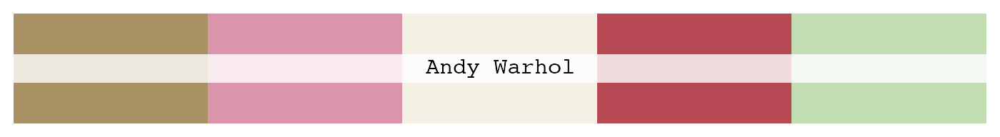
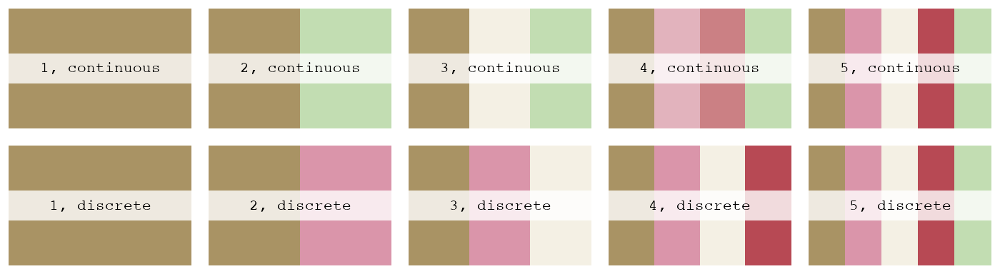
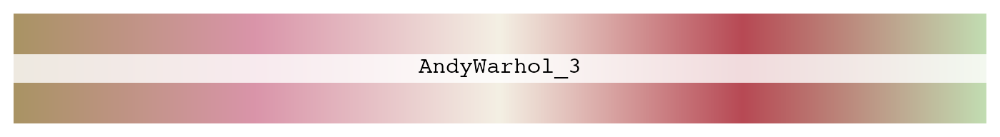

The function lisa_palette allows users to call and modify palettes by adjusting the parameters n and type where n represents the number of colors and type represents discrete or continuous. So how does this work? Under the hood, grDevices::colorRampPalette() is doing all the work, see here. Unfortunately, I am unable to dive into the details of how colorRampPalette() works but we can at least see how this works visually. The palette we will use is AndyWarhol_3, Andy Warhol’s Mick Jagger.

To compare how things change with lisa_palette we can create a list of 10 palettes:
Note: You will not be able to reproduce this plot with the released version from CRAN, install the latest from GitHub if you want to reproduce. The CRAN version doesn’t allow you to modify the plot title.
x <- lapply(1:5, function(x) structure(lisa_palette("AndyWarhol_3", n = x, "continuous"), name = paste0(x, ", continuous"))) y <- lapply(1:5, function(x) structure(lisa_palette("AndyWarhol_3", n = x, "discrete"), name = paste0(x, ", discrete"))) par(mfrow = c(2, 5)) lapply(c(x, y), plot)

The behavior for discrete palettes is pretty straight forward, it just picks 1:n colors from the palette vector, for example:
lisa$AndyWarhol_3[1:3] #> [1] "#a99364" "#da95aa" "#f4f0e4" lisa_palette("AndyWarhol_3", n = 3, type = "discrete") #> * Work: Mick Jagger #> * Author: AndyWarhol_3 #> * Colors: #a99364 #da95aa #f4f0e4
If you ask for more than 5 colors palettes, it’ll throw an error because only 5 exist.
lisa_palette("AndyWarhol_3", n = 6, type = "discrete") #> Error in lisa_palette("AndyWarhol_3", n = 6, type = "discrete"): Number of requested colors greater than what palette can offer
The behavior for continuous palettes is a bit different, it tries to interpolate a set of colors to create a new palette. It does this with colorRampPalette() from the grDevices package:
grDevices::colorRampPalette(lisa$AndyWarhol_3)(3) #> [1] "#A99364" "#F4F0E4" "#C2DDB2"
Which is equivalent to:
ramp <- colorRamp(lisa$AndyWarhol_3) x <- ramp(seq.int(0, 1, length.out = 3)) if (ncol(x) == 4L) { rgb(x[, 1L], x[, 2L], x[, 3L], x[, 4L], maxColorValue = 255) } else { rgb(x[, 1L], x[, 2L], x[, 3L], maxColorValue = 255) } #> [1] "#A99364" "#F4F0E4" "#C2DDB2"
Where the code chunk above is the source code for colorRampPalette() with a few changes to the formatting, see here for the true source code.
Having said all of this, in order to truly understand how this works, you would need to analyze that chunk of code and any other chunks that it depends on. Beware, from this point on it gets complicated (for me at least) and I don’t think I could accurately articulate what’s going on behind the scenes, so I wont.
In short, colorRampPalette() depends on a secondary function colorRamp() which depends on convertColor() and so on, see the history of these functions here and the initial commit here by Thomas Lumley in 2004. Whats interesting is the link Thomas provided in the source code which seems to be where a lot of the math involved in color interpolation comes from. For the layman like myself, I will just embrace the magic behind color interpolation.
x <- lisa$AndyWarhol_3 y <- lisa_palette("AndyWarhol_3", 1000, "continuous") lapply(list(x, y), plot)
